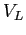
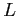
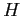
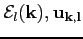
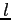
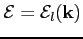
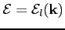
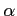

Next: The Drift Process
Up: The Particle Dynamics
Previous: The Particle Dynamics
Contents
It is well-known from the crystallography that crystals can be described in terms of Bravais lattices, which means, physically, that the crystal lattice can be though as a periodic potential made of ions. The quantum mechanical dynamics of an electron in a periodic potential can be described by the following well-known Bloch's theorem.
Theorem.
Let us consider an electron whose motion is governed by the potential 
generated by the ions located at the points of the crystal lattice 
. The Schroedinger equation is
with the Hamiltonian 
given by
Then, this theorem states that the bounded eigenstates have the following form:
and
with  beloging to
.
Furthermore, it is possible to prove the existence of an infinite sequence of eigenpairs of solutions
beloging to
.
Furthermore, it is possible to prove the existence of an infinite sequence of eigenpairs of solutions

with 
belonging to the non negative integers set  . The function

describes the
-th energy band of the crystal.
. The function

describes the
-th energy band of the crystal.
The energy band of crystals can be obtained at the cost of intensive numerical calculations by the quantum theory of solids. However, in order to describe electron and hole transport, for most applications, a simplified description is adopted which is based on simple analytical models. These are the effective mass approximation and the Kane dispersion relation, which are used in GNU Archimedes simulations. In the approximation of the Kane dispersion relation, which takes into account the non-parabolicity at high energy, the energy still depends only on the modulus of the pseudo-wave vector, but we have the following relation
where 
is the non-parabolicity parameter.
It is possible to choose other energy band relations, but they are actually not implemented in GNU Archimedes. Anyway, it seems, from precedent experiment simulations, that the Kane dispersion relation is the best choice if we consider the accuracy of the electron energy and velocity along with velocity of computation.
Next: The Drift Process
Up: The Particle Dynamics
Previous: The Particle Dynamics
Contents
Didier Link
2007-05-18